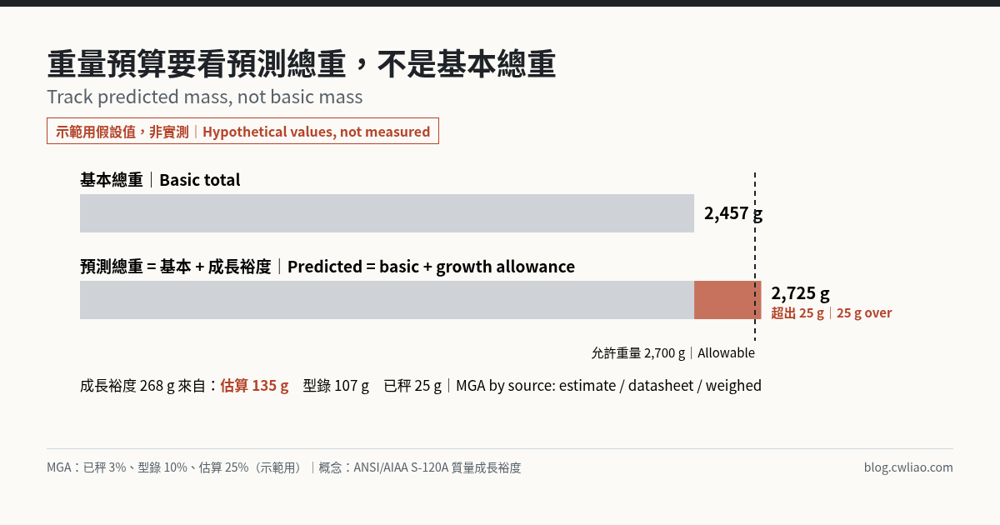
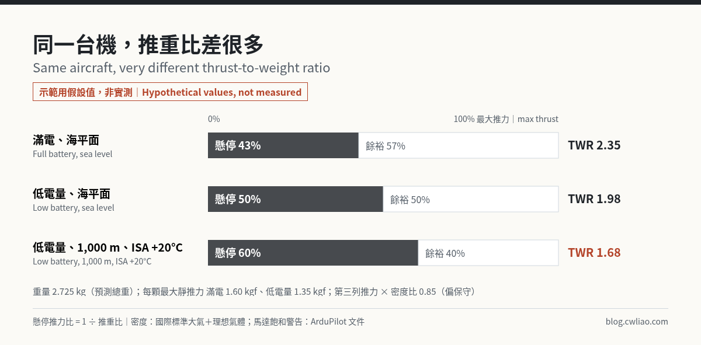

推重比怎麼抓：無人機重量與推力預算表實作
摘要： 推重比（thrust-to-weight ratio）是多旋翼設計裡最常被拿來比的數字，但只看一個數字很容易騙到自己。這篇用一張標明假設值的重量預算表，看質量成長裕度、電池電壓、空氣密度怎麼一層一層吃掉推力餘裕，再用 ArduPilot、PX4 飛行日誌裡的懸停油門回頭校正。後半是本週無人機新聞與下週看點。
Summary: Thrust-to-weight ratio is the number everyone quotes for multirotors, and on its own it's easy to fool yourself with. This post builds a weight budget with clearly labeled assumptions, shows how mass growth, battery sag and air density eat into thrust margin, and closes the loop with hover throttle from ArduPilot and PX4 logs. The second half covers this week's drone news and what to watch next.
開場：多帶 40 磅，航程少掉四成｜Opening: 40 More Pounds, 40% Less Range
Skyways 這週發表的 Skyreach 是一台垂直起降的混合動力貨運機，八顆電動馬達負責起降，噴射燃油引擎負責巡航。公司給的數字是：帶 10 磅貨單程可飛超過 1,300 英里，50 磅約 780 英里，80 磅約 280 英里；New Atlas 也提醒這些數字還在飛測、可能會改（New Atlas、PR Newswire）。
從 10 磅加到 50 磅，航程少了四成；再加到 80 磅，只剩 50 磅時的三分之一左右。原因不神秘：最大起飛重量是固定的，貨多一磅，油就少一磅。這就是重量預算。
第一篇〈無人機設計：從需求到規格〉講過，重量是所有子系統共用的一塊餅；上一篇〈無人機架構全圖〉把子系統切好、介面接好。這篇把兩件事放進同一張表：每個零件多重、還可能長多重，以及動力系統在最差的情況下還剩多少推力。
Skyways unveiled Skyreach this week, a hybrid VTOL cargo drone with eight electric motors for takeoff and landing and a jet-fuel engine for cruise. The company says it flies more than 1,300 miles one way with 10 lb of cargo, about 780 miles with 50 lb and about 280 miles with 80 lb; New Atlas notes it's still in flight testing and the numbers may change (New Atlas, PR Newswire).
Going from 10 to 50 lb costs 40% of the range; going on to 80 lb leaves about a third of the 50 lb figure. Nothing mysterious: max takeoff weight is fixed, so every extra pound of cargo is a pound of fuel left behind. That's a weight budget.
The first post, "Drone System Design: From Mission to Spec", called weight a pie every subsystem shares. Last week's architecture map split the aircraft into subsystems. This post puts both into one sheet: what each part weighs, how much it might still grow, and how much thrust the propulsion system has left on its worst day.
1. 推重比是什麼，為什麼不是越大越好｜What Thrust-to-Weight Ratio Is, and Why Bigger Isn't Always Better
推重比 = 所有馬達的最大推力加總 ÷ 起飛重量。兩邊單位要一致（公斤力對公斤，或牛頓對牛頓）。
它的倒數更好用：懸停推力比 = 1 ÷ 推重比，也就是懸停時每顆馬達大約用掉自己最大推力的幾成。推重比 2，懸停大約用一半推力；推重比 1.5，懸停就要用到三分之二，剩下三分之一要拿來修姿態、爬升、抗風。
那推重比越大越好嗎？不一定。推力要從更大的馬達、更大的槳、更高電壓或更大電流來，每一項都會加重量。第一篇算過，同一組槳、效率不變的前提下，理想懸停功率大約跟重量的 1.5 次方走。所以穿越機追求極高推重比是為了機動，航拍或巡檢機的推重比通常沒那麼高，換的是續航。推重比要跟任務一起定，不是越高越專業。
Thrust-to-weight ratio = total maximum thrust of all motors ÷ takeoff weight, in matching units (kgf over kg, or newtons over newtons).
Its inverse is often more useful: hover thrust fraction = 1 ÷ TWR, roughly how much of each motor's max thrust you burn just to hover. At a TWR of 2, hover takes about half; at 1.5, two-thirds, leaving one-third for attitude control, climb and wind.
Is more always better? No. Extra thrust comes from bigger motors, bigger props, higher voltage or more current, and all of them add weight. As the first post showed, with the same props and constant efficiency, ideal hover power scales roughly with weight to the 1.5 power. Racing quads chase very high TWR for agility; mapping and inspection aircraft usually settle lower and spend the difference on endurance. Pick TWR with the mission, not as a badge.
2. 餘裕要留給誰：六個會吃掉推力的地方｜Where the Margin Goes: Six Things That Eat Thrust
我不太喜歡直接背一個「推重比至少要多少」的數字。比較好的做法，是列出哪些東西會吃掉推力，一項一項估，最後才看要留多少。
- 控制餘裕。 飛控修姿態靠的是讓某幾顆馬達轉快、另幾顆轉慢。如果懸停時已經接近全油門，就沒有「轉快」的空間。ArduPilot 文件說，Potential Thrust Loss 警告代表馬達飽和在 100%，飛控已經做不到要求的滾轉、俯仰、偏航和油門輸出；懸停或平穩飛行時就出現，要從硬體解決，提高推重比，或換動力、或減重（ArduPilot）。
- 電池電壓。 同一個油門，電池快沒電時電壓比較低，馬達能出的最大推力也跟著掉。ArduPilot 把「油門加大時的電壓下垂」列為推力曲線不線性的原因之一，並用
MOT_BAT_VOLT_MAX、MOT_BAT_VOLT_MIN（例：LiPo 每芯 4.2 V、3.3 V）做補償（ArduPilot 調參前設定）。所以推重比要用低電量的推力算，不是滿電。 - 空氣密度。 槳的推力係數定義是 C_T = T ÷ (ρn²D⁴)（UIUC Propeller Data Site），同轉速下推力跟空氣密度 ρ 成正比。標準大氣海平面 ρ = 1.225 kg/m³（國際標準大氣）；用同一套公式算，1,000 公尺約 1.11、2,000 公尺約 1.01。熱天也會讓密度變小。
- 爬升、抗風、酬載變化。 ArduPilot 文件說推力警告在大酬載和強陣風時更容易出現（ArduPilot）；PX4 的懸停推力估測參數說明也提到，酬載大小不同會讓需要的懸停推力明顯改變（PX4 參數表 HTE_THR_RANGE）。
- 失效容錯。 六軸掉一顆馬達，剩下五顆的推力上限最多是原本的 5/6，所以推重比至少要大於 1.2 才有可能撐住重量；實際上還要考慮對角馬達怎麼配平、偏航還剩多少，需要的餘裕更大。這題放到後面的冗餘與容錯篇再細算。
- 重量會長大。 設計還沒定的時候，表上的重量幾乎一定偏輕。線材、螺絲、散熱片、補強件，到最後都會冒出來。這一項值得自己獨立一節。
Rather than memorize a single "minimum TWR," I'd list what eats thrust, estimate each item, and only then decide the margin.
- Control authority. The flight controller corrects attitude by speeding some motors up and slowing others down. Near full throttle in hover, there's no room to speed up. ArduPilot says a Potential Thrust Loss warning means a motor is saturating at 100% and the controller can no longer achieve the requested roll, pitch, yaw and throttle; if it shows up in hover or relaxed flight, fix the hardware by raising TWR through propulsion changes or less mass (ArduPilot).
- Battery voltage. At low charge the voltage drops and so does max thrust. ArduPilot lists voltage sag as one cause of a non-linear thrust curve and compensates with
MOT_BAT_VOLT_MAXandMOT_BAT_VOLT_MIN(e.g. 4.2 V and 3.3 V per LiPo cell) (ArduPilot). Size TWR on low-battery thrust, not a full pack. - Air density. Propeller thrust coefficient is defined as C_T = T / (ρn²D⁴) (UIUC Propeller Data Site), so at the same RPM thrust scales with density. Standard sea-level density is 1.225 kg/m³ (International Standard Atmosphere); the same model gives about 1.11 at 1,000 m and 1.01 at 2,000 m. Hot days lower it too.
- Climb, wind, payload changes. ArduPilot notes thrust warnings are more likely with large payloads and strong or gusty wind (ArduPilot); PX4's hover thrust estimator docs say different payloads can change the required hover thrust strongly (PX4 HTE_THR_RANGE).
- Fault tolerance. Lose one motor on a hexacopter and the remaining five can give at most 5/6 of the original thrust, so TWR must exceed 1.2 just to hold weight. In practice, balancing the opposite motor and keeping yaw authority need more. A later post on redundancy will do the full math.
- Mass growth. Early in a design the sheet is almost always too light. Wiring, fasteners, heat sinks and reinforcements show up late. This one gets its own section.
3. 重量預算表：欄位、成熟度和成長裕度｜The Weight Budget Sheet: Columns, Maturity and Growth Allowance
太空系統有一套現成的做法可以借。美國 ANSI/AIAA S-120A（太空系統質量特性控制）用「質量成長裕度」（Mass Growth Allowance, MGA）處理重量會長大這件事：MGA = 預測質量 − 基本質量，依零件的設計成熟度和歷史成長趨勢給，只會是正值或零，設計越成熟、MGA 越小（美國空軍 SMC 對 S-120A 的剪裁文件）。
無人機不用照抄太空規範的百分比，但這個概念很好用：每一列除了重量，還要記下這個數字從哪裡來。我會開這幾欄：
| 欄位｜Column | 內容｜What goes in | |---|---|---| | 項目、數量｜Item, qty | 照上一篇的子系統分組｜grouped by subsystem | | 基本質量（g）｜Basic mass | 目前最好的數字｜best current number | | 來源｜Source | 已秤／型錄／CAD／估算｜weighed / datasheet / CAD / estimate | | 成長裕度（%）｜MGA % | 依來源給，已秤最低、估算最高｜lowest for weighed, highest for estimates | | 預測質量（g）｜Predicted | = 基本 ×（1 + MGA）｜= basic × (1 + MGA) | | 負責人、更新日期｜Owner, date | 誰改的、什麼時候｜who changed it, when |
表底下三個數字：基本總重、預測總重、允許重量（法規門檻、推力或任務決定的上限）。餘裕 = 允許重量 − 預測總重。要盯的是預測總重，不是基本總重。
下面是一台巡檢四旋翼的示範表。所有數字都是示範用假設值，不是任何實機的實測；成長裕度我用已秤 3%、型錄 10%、估算 25% 三檔，只是為了示範，不是標準值。
| 項目｜Item | 基本（g）｜Basic | 來源｜Source | MGA | 預測（g）｜Predicted |
|---|---|---|---|---|
| 機架（機臂＋中心板＋起落架）｜Frame | 420 | 估算｜estimate | 25% | 525 |
| 馬達 ×4｜Motors ×4 | 440 | 型錄｜datasheet | 10% | 484 |
| 槳 ×4｜Props ×4 | 72 | 型錄｜datasheet | 10% | 79 |
| 四合一電調｜4-in-1 ESC | 60 | 型錄｜datasheet | 10% | 66 |
| 飛控＋GNSS／羅盤｜FC + GNSS/compass | 80 | 已秤｜weighed | 3% | 82 |
| 電源模組、線材、接頭、螺絲｜Power module, wiring, hardware | 120 | 估算｜estimate | 25% | 150 |
| 遙控接收＋數傳｜RC Rx + telemetry | 45 | 已秤｜weighed | 3% | 46 |
| 任務電腦＋散熱｜Mission computer + cooling | 150 | 型錄｜datasheet | 10% | 165 |
| 相機＋雲台｜Camera + gimbal | 350 | 型錄｜datasheet | 10% | 385 |
| 6S 電池｜6S battery | 720 | 已秤｜weighed | 3% | 742 |
| 合計｜Total | 2,457 | 2,725 |
假設允許重量是 2,700 g。只看基本總重 2,457 g，看起來還有 243 g 可以用；加上成長裕度，預測總重 2,725 g，已經超出 25 g。268 g 的成長裕度裡，機架和線材這兩列「估算」就佔了 135 g，所以下一步最划算的事，是把這兩列變成實秤或 CAD 數字。

Space programs already have a method worth borrowing. ANSI/AIAA S-120A (mass properties control for space systems) handles growth with a Mass Growth Allowance: MGA = predicted mass − basic mass, set by design maturity and historical growth trends, always positive or zero, shrinking as the design matures (USAF SMC tailoring of S-120A).
A drone doesn't need the space-standard percentages, but the idea transfers: every row records not just a mass but where that number came from. The columns I'd use are in the table above: item, basic mass, source (weighed, datasheet, CAD, estimate), MGA %, predicted mass, and owner/date.
Three numbers sit at the bottom: total basic, total predicted, and allowable mass (set by a regulatory threshold, thrust or the mission). Margin = allowable − predicted. Track predicted, not basic.
The example is an inspection quad. Every number is a hypothetical demo value, not a measurement of any real aircraft. I use 3% for weighed parts, 10% for datasheet values and 25% for estimates purely to illustrate; they aren't a standard.
With an allowable mass of 2,700 g, the basic total of 2,457 g looks like 243 g of room. Add growth allowance and the predicted total is 2,725 g, already 25 g over. Of the 268 g of allowance, the two "estimate" rows (frame and wiring) account for 135 g, so the cheapest next step is turning those two rows into weighed or CAD numbers.
4. 把推力放進去：同一台機，三種情況｜Adding Thrust: One Aircraft, Three Conditions
接著用同一台機算推重比。再一次，以下推力都是示範用假設值：假設推力台量到每顆馬達滿電最大靜推力 1.60 kgf、低電量時 1.35 kgf。重量用預測總重 2.725 kg。
| 情況｜Condition | 總推力｜Total thrust | 推重比｜TWR | 懸停推力比｜Hover fraction |
|---|---|---|---|
| 滿電、海平面標準大氣｜Full battery, sea level ISA | 6.40 kgf | 2.35 | 43% |
| 低電量、海平面｜Low battery, sea level | 5.40 kgf | 1.98 | 50% |
| 低電量、1,000 m、比標準大氣熱 20°C｜Low battery, 1,000 m, ISA +20°C | 約 4.58 kgf | 1.68 | 60% |
第三列的算法：1,000 公尺、比標準大氣高 20°C（約 28.5°C）時，用標準大氣公式加理想氣體算出的密度約 1.04 kg/m³，是海平面的 0.85 倍，推力就乘 0.85。這是偏保守的估法：空氣變稀，槳的負載變輕，同樣電壓下馬達會轉快一點，實際掉的推力通常沒這麼多。要準，就到現場或在推力台上量。
同一台機，滿電在平地看起來推重比 2.35，很漂亮；夏天到山區、電池剩最後一段，懸停就要用掉 60% 推力。如果用基本總重 2.457 kg 算，滿電推重比會是 2.6，看起來更好看，但那是還沒長大的重量。

懸停推力比不等於懸停油門。 馬達加槳的推力和油門不是直線關係。ArduPilot 用 MOT_THST_EXPO 描述推力曲線的彎曲程度，預設 0.65，MOT_SPIN_MAX 預設 0.95，代表接近 95% 油門後推力就平了（ArduPilot Motor Thrust Scaling）。文件也提醒：有些電調自己已經做了線性化，這時用預設 0.65 反而會不穩，要用推力台資料重設，通常落在 0 到 0.2。換句話說，表上的懸停推力比要經過推力曲線，才會變成飛控看到的油門值。
Now TWR for the same aircraft. Again, all thrust values are hypothetical: assume a thrust stand shows 1.60 kgf max static thrust per motor on a full pack and 1.35 kgf near empty, with weight at the predicted 2.725 kg. The table above gives 2.35 full at sea level, 1.98 near empty, and about 1.68 near empty at 1,000 m on a day 20°C above standard.
For the third row, at 1,000 m and ISA +20°C (about 28.5°C), the standard atmosphere plus the ideal gas law gives about 1.04 kg/m³, 0.85 of sea level, so thrust is scaled by 0.85. That's conservative: thinner air unloads the prop and the motor spins a bit faster at the same voltage, so the real loss is usually smaller. Measure on site or on a stand if it matters.
The same aircraft shows a handsome 2.35 on a full pack at sea level, and needs 60% of its thrust just to hover on a hot day in the hills with a nearly empty battery. Using the basic 2.457 kg would show 2.6 on a full pack, which looks even better and describes a weight the aircraft won't keep.
Hover thrust fraction isn't hover throttle. Thrust isn't linear with throttle. ArduPilot models the curve with MOT_THST_EXPO (default 0.65) and MOT_SPIN_MAX (default 0.95, where thrust flattens near full throttle) (ArduPilot Motor Thrust Scaling). It also warns that some ESCs already linearize thrust, and then the default 0.65 causes instability; values of 0 to 0.2 typically result from stand data. The hover fraction in your sheet passes through that curve before it becomes the throttle number the autopilot shows.
5. 預算超了怎麼辦｜Over Budget: What Now
示範表超了 25 g。能動的地方大概四個，每一個都有代價：
- 減重。 先處理成長裕度最大的列。機架換材料或改結構會碰到剛性和振動，這是後面機架篇的主題。Machina 11/6 宣布獲選美國國防部的工業基礎現代化計畫，要用機器人直接把金屬板成形做 LUCAS 級無人機機體，不用模具（Machina）。材料和製程一換，重量、剛性、產能會一起變，這張表也得重算。
- 加推力。 換更大的槳或更高 KV 的馬達，推力上去，馬達和電調也變重、電流變大，又回到上面的表。
- 縮任務。 降低酬載、縮短續航要求、限制最高海拔或溫度。這是改需求，要回頭找訂需求的人談。
- 接受較低推重比，限制飛法。 ArduPilot 文件說，如果推力警告只在爬升和激烈動作時出現，降低要求的加速度和速度可能就夠（ArduPilot）。代價是飛起來比較鈍，抗陣風能力也比較差。
我自己的順序是：先把「估算」列變成實測，常常一秤完就不超了；還超，再談改需求；最後才是換動力，因為換動力會牽動電池、電調、線材，整張表重來一次。
The example is 25 g over. There are about four levers, each with a cost:
- Cut weight. Start with the rows carrying the most allowance. Changing frame material or structure touches stiffness and vibration, a later post's topic. On November 6 Machina said it was selected by the US defense department to form metal airframes for LUCAS-class drones directly with robots, without dies (Machina). Change material and process and weight, stiffness and throughput all move, and the sheet has to be redone.
- Add thrust. Bigger props or higher-KV motors add thrust, but also motor and ESC weight and current, which sends you back to the sheet.
- Shrink the mission. Less payload, shorter endurance, a lower altitude or temperature limit. That changes requirements, so it's a conversation with whoever owns them.
- Accept lower TWR and fly gentler. ArduPilot says that if thrust warnings only appear in climbs and aggressive maneuvers, lowering requested accelerations and speeds may be enough (ArduPilot). The cost is sluggish handling and less gust rejection.
My order: turn estimates into measurements first, since weighing often makes the overrun disappear; then requirements; propulsion last, because it drags battery, ESC and wiring along and the whole sheet starts over.
6. 用飛行日誌回頭校正｜Close the Loop with Flight Logs
表做得再細也只是預測。第一架原型飛起來之後，飛控會告訴你真相。
- ArduPilot： 在非手動模式穩定懸停時，
MOT_THST_HOVER會自動往平均馬達輸出靠；要手動設，就看 dataflash 日誌的CTUN.ThO。文件寫這個值通常在 0.2 到 0.6，推重比很高的機會更低（ArduPilot Setting Hover Throttle）。 - PX4：
MPC_THR_HOVER是懸停需要的垂直推力，用來初始化懸停推力估測器，估出來的值當作高度控制「零垂直加速度」的基準，降落偵測也靠它（PX4 參數表）。
拿日誌裡的懸停值和表上預測的懸停推力比（經過推力曲線換算）對照。實際明顯比較高，代表不是重量低估，就是推力高估。後者很常見：ArduPilot 文件直接說，不要相信製造商的推力曲線資料，常常不準，專業機要自己買推力台量（ArduPilot 調參前設定）。推力台怎麼量才可信，之後有一篇專門談。
校正完，把表上「型錄」那幾列改成「已秤」或「實測」，成長裕度跟著降。重量預算表是一份會一直改的文件，每次改機都要更新，不是設計初期填一次就收起來。
A sheet is only a prediction. Once the first prototype flies, the autopilot tells you the truth.
- ArduPilot: in a steady hover in non-manual modes,
MOT_THST_HOVERslowly learns the average motor output; to set it by hand, readCTUN.ThOfrom a dataflash log. The docs say it's usually 0.2 to 0.6, lower for very high power-to-weight (ArduPilot Setting Hover Throttle). - PX4:
MPC_THR_HOVERis the vertical thrust required to hover; it initializes the hover thrust estimator, whose estimate is the base for zero vertical acceleration in altitude control and matters for land detection (PX4 Parameter Reference).
Compare the logged hover value with the sheet's predicted hover fraction, mapped through the thrust curve. If the real number is clearly higher, you underestimated weight or overestimated thrust. The second is common: ArduPilot says not to trust manufacturer thrust-curve data, which is frequently inaccurate, and recommends a thrust stand for professional aircraft (ArduPilot). Getting trustworthy thrust-stand data is its own post later on.
After calibrating, move datasheet rows to weighed or measured and drop their allowance. A weight budget is a living document, updated with every change to the aircraft, not filled in once at kickoff and filed away.
工程師重點｜Engineer's Takeaways
- 推重比用最差情況算。 低電量、高溫、高海拔、加上成長裕度後的預測重量；滿電平地的數字只是好看。 Size TWR for the worst case: low battery, hot and high, predicted (not basic) mass.
- 重量表每一列都要寫來源。 已秤、型錄、估算的可信度不同，成長裕度也不同；先把估算列變成實測，最省事。 Every row needs a source. Weighed, datasheet and estimated numbers deserve different growth allowances; measure the estimates first.
- 用懸停油門驗證。 ArduPilot 的
MOT_THST_HOVER、PX4 的MPC_THR_HOVER和日誌，是檢查重量與推力模型最便宜的方法。 Verify with hover throttle. ArduPilot'sMOT_THST_HOVER, PX4'sMPC_THR_HOVERand the logs are the cheapest check on your model.
下週預告｜Next Week
下一篇我想接著談飛控韌體怎麼選：PX4、ArduPilot、Betaflight 各適合什麼機種，授權和社群差在哪裡。｜Next, choosing flight firmware: PX4, ArduPilot or Betaflight, which airframes each suits and how licensing and community differ.
本週無人機大新聞｜This Week's Big Drone News
1. 中科院清查 10 家疑涉中製零件；亞拓案起訴內容公開｜NCSIST Flags 10 Suppliers over Chinese Parts; Align Indictment Details Emerge
中科院 11/13 表示，主動清查已交貨廠商後，有 10 家疑似混用中國製零組件，已要求換成無疑慮的零件；名單因仍在改善期沒有公開。做法分三段：2024 年前的舊案，要求廠商提供同機型拆機、逐一比對核心零件產地；正在交貨或準備量產的案子，強制送樣並派員查核製程；新採購案交貨一律全機拆驗並查原廠產地證明。無法證明來源又不配合的廠商，會被排除出中科院供應鏈並通報各公務機關（自由軍武頻道）。
同一週，亞拓公司負責人夫婦被台中地檢署依國安法等罪名起訴。聯合新聞網報導的起訴內容提到：陸軍官校訓練機用了北京君正的 T31 影像處理晶片，產地卻標台灣；陸軍後勤指揮部 32 台投彈式訓練機驗收時拆 4 台，發現普冉（PUYA）與標示「CHINA」的晶片。報導也引被告供詞說「台灣缺乏無人機特殊晶片」（聯合新聞網）。這些是起訴內容和被告說法，案件還沒判決。
我的看法：對工程師來說，這兩則加起來的意思是，BOM 上每一顆影像、通訊、主控晶片都要能拿出產地證明，而且要在設計階段就排進選料，不是交貨前才補。
NCSIST said on November 13 that an audit of past suppliers found 10 suspected of mixing in Chinese-made components; they've been told to swap them out, and names are withheld during the correction period. Older contracts require teardown comparisons of core parts, ongoing ones get mandatory samples and process checks, and new deliveries face full teardown plus original-maker origin certificates. Suppliers who can't prove origin and won't cooperate will be dropped and reported to other agencies (Liberty Times Defense).
The same week, prosecutors in Taichung indicted the owners of drone maker Align under the National Security Act and other charges. According to UDN, the indictment says an Army academy trainer used an Ingenic T31 image processor labeled as made in Taiwan, and a teardown of 4 of 32 Army logistics trainers found PUYA chips and chips marked "CHINA" (UDN). These are prosecution allegations; there is no verdict.
My view: every imaging, comms and main processor chip on a BOM now needs a provable origin, and that belongs in part selection at design time, not in a scramble before delivery.
2. 資通電軍要做「衛星定位擬真系統」：從蠻力干擾到欺騙｜Taiwan's Cyber Command Plans a GNSS Spoofing System
自由軍武頻道引國防部明年度預算書：資通電軍編列 6,000 萬元研發「衛星定位擬真系統」，用模擬的衛星訊號讓敵方無人機收到錯誤位置。預算書說，現有的定位干擾只是「蠻力干擾」，新型無人機還有慣性導航、視覺里程計和地形比對，被干擾時可能切到備援導航；欺騙的目的是降低對方切換備援的機會。系統規劃可攜式模擬器、裝載車和威脅信號產生車，採軟體定義電子戰平台，預計明年完成研製與驗收（自由軍武頻道）。報導也說，這套系統不能接管無人機，只影響位置判斷。
反過來看設計端：如果你的機會被欺騙，導航融合就要能發現 GNSS 和 IMU、視覺之間對不上。這是書裡 GNSS 與干擾欺騙那一篇的題目。
Citing next year's defense budget, Liberty Times reports Taiwan's Information, Communications and Electronic Force Command plans NT$60 million to develop a GNSS simulation system that feeds hostile drones false positions. The budget document calls current jamming "brute force" and notes newer drones fall back on inertial, visual odometry and terrain matching; spoofing aims to keep them from switching. It plans portable simulators, vehicles and a software-defined EW platform, with development and acceptance due next year (Liberty Times Defense). The report says it can't take control of a drone, only skew its position.
From the design side: if your aircraft can be spoofed, its navigation fusion has to notice when GNSS disagrees with the IMU and vision.
3. 海軍編 9.9 億在宜蘭蓋無人機起降場｜Taiwan Navy Budgets NT$990 Million for a Drone Airfield in Yilan
國防部明年度預算書顯示，海軍規劃投入約 9.92 億元，在宜蘭三星鄉紅柴林營區新建無人機起降場，執行期 2027 到 2030 年，設施包括起降跑道、作業大坪、戰備大樓、無人機組測廠（保修棚廠）、車庫和發電機房。預算書寫的目的是「縮短航程並增加留空偵巡時間」，戰時也可當作無人機戰力保存的疏散場所（自由軍武頻道）。
這則剛好接這篇主題：起降場離任務區近一點，同一台機就能把更多重量和能量花在留空，而不是來回飛。
Next year's defense budget shows the Navy plans about NT$992 million for a drone airfield at the Hongchailin base in Sanxing, Yilan, built from 2027 to 2030 with a runway, apron, operations building, assembly and test hangar, garage and generator house. The stated goal is to "shorten transit and increase time on station," and in wartime it can serve as a dispersal site (Liberty Times Defense). It fits this post: base the aircraft closer to the mission and more of its weight and energy goes to loiter instead of transit.
4. Skyreach：混合動力換航程，酬載多一點就少很多｜Skyreach: Hybrid Power for Range, and a Steep Payload Penalty
開場提過的 Skyways Skyreach，11/9 發表。公司稱滿油航程超過 1,300 英里、滯空超過 18 小時，燃油加酬載合計 100 磅，酬載艙 7 立方英尺，燒 JP-5 或 Jet A-1；這是美國空軍 AFWERX STRATFI 3,700 萬美元獎項的量產平台，已在德州奧斯汀開始生產，12 月起和軍民客戶試飛（PR Newswire）。以上是公司數字。
「燃油加酬載 100 磅」這句話，就是一張重量預算表的最後一行。
Skyways launched Skyreach on November 9. The company claims more than 1,300 miles and 18 hours with full fuel, a combined 100 lb of fuel plus payload, a 7 cu ft bay and JP-5 or Jet A-1. It's the production platform for a $37 million AFWERX STRATFI award, already in production in Austin, with customer flights from December (PR Newswire). These are company figures. "100 lb of fuel plus payload" is literally the bottom line of a weight budget.
5. Amazon 在英國拿到 SAIL 4，達靈頓配送範圍擴大十倍以上｜Amazon Gets SAIL 4 in the UK, Expanding Darlington Coverage
Amazon Prime Air 11/10 宣布取得英國民航局 SAIL 4 運行授權與適航驗證，公司稱是全球第一家；達靈頓可送達戶數從約 600 戶增加到約 8,000 戶，使用 MK30（Amazon UK）。BBC 補充：包裹限 5 磅以下；今年 7 月曾有一架墜入達靈頓民宅花園，英國空難調查局調查中，無人受傷，Amazon 說機體「依設計反應」（BBC）。
5 磅的酬載上限，背後也是一張推力和重量的表；而墜落調查會怎麼寫，值得做配送機的人追。
Amazon Prime Air said on November 10 it received UK CAA SAIL 4 operational authorization and airworthiness verification, which it calls a world first; Darlington coverage grows from about 600 to about 8,000 homes with the MK30 (Amazon UK). BBC adds that parcels are capped at 5 lb and that a drone fell into a Darlington garden in July; the AAIB is investigating, no one was hurt, and Amazon says it "responded as designed" (BBC).
其他值得一看｜Also Worth a Look
- 立法院追加預算：自由時報引經濟民主連合智庫整理，委員會首輪審查有 3 案共 66.7 億元被提案減列、6 案共 10.6 億元被提案凍結，其中包括無人機採購和多項無人機、反制系統，保留到院會處理（自由時報）。這是民間智庫對提案的整理，不是立法院決議。｜Taiwan's supplementary budget: a civic think tank tallies proposed cuts and freezes touching drone and counter-drone items; not a final vote.
- 外交部宣布將籌組多邊的「全球無人機韌性與民主聯盟」（GUARD），聚焦供應鏈、國際認證、人才、競賽和展會；目前是籌組計畫（自由時報）。｜Taiwan's foreign ministry plans a multilateral drone alliance, GUARD; not yet formed.
- 德國聯邦國防軍禁用中國製小型無人機（含 DJI），要求停飛並改用德國或歐洲產品，國防部發言人向 Der Spiegel 與路透證實（DroneXL）。｜Germany's Bundeswehr bans Chinese-made small drones, DJI included.
- 烏克蘭 UFORCE 募得 7 億美元、估值 60 億美元，資金用於在烏克蘭和盟國擴產（CNBC）。｜Ukraine's UFORCE raises $700M at a $6B valuation.
- 美軍在波蘭測 FD-1 攔截機，目標是建立比防空飛彈便宜的硬殺層；陸軍沒公布攔截成功率或單價（Defence Industry Europe）。｜US Army tests the FD-1 interceptor in Poland as a cheaper hard-kill layer.
- 烏克蘭 Brave1 測 9 家本土偵察機，要取代軍方用的 DJI Mavic；需求包括無 GPS 可飛、留空至少 60 分鐘（Defence Blog）。｜Ukraine tests nine domestic recon drones to replace the Mavic.
下週可能發展｜What to Watch Next Week
- 11/15（日）起北京無人機持有禁令生效。｜From Nov 15: Beijing's drone possession ban takes effect.（DroneXL）
- 11/19（四）FCC 公開會議，議程有 450 MHz 無人機控制鏈路和 24 GHz 無人機偵測雷達。｜Nov 19: FCC open meeting on 450 MHz control links and 24 GHz detection radar.（FCC）
- 11/20（五）前立法院預定三讀追加預算，看無人機項目的減列和凍結最後怎麼定。｜By Nov 20: Taiwan's supplementary budget vote, including drone line items.（自由時報）
- 11/25（三）FCC 無人機衛星通訊提案初次意見截止。｜Nov 25: initial comments due on the FCC drone satcom proposal.（Federal Register）
- 日期未定｜No date yet： 中科院 10 家廠商改善期結果（自由軍武頻道）；德軍禁用中國無人機後的替代採購（DroneXL）；Skyreach 12 月客戶試飛（New Atlas）。｜NCSIST supplier corrections; Germany's replacement buys; Skyreach customer flights in December.
Albert｜無人機工程師｜Drone Engineer
履歷｜Resume：cwliao.com
連載頁｜Series：無人機開發 52 週｜Drone Dev in 52 Weeks